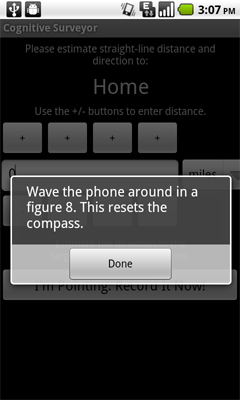

Please follow these instructions to begin using the Cognitive Surveyor application. They will also explain the direction/distance estimation task you will be asked to repeat throughout the week.
Note that to complete this tutorial, you will need to visit two different landmarks. This could be, for example, your home and your office, or your home and your regular supermarket. The locations are up to you. Please read through all the instructions before proceeding. You may also want to consider printing these out so that you can refer to the instructions when you visit your second landmark.
If you have any questions or encounter problems, contact Drew Dara-Abrams (the experimenter) at any time: drew@geog.ucsb.edu or (805) 680-7191.
Open the Android Market  on your phone, search for Cognitive Surveyor, and install this application.
on your phone, search for Cognitive Surveyor, and install this application.
Add the Cognitive Surveyor icon  to your home screen. You will want to be able to start the Cognitive Surveyor app whenever you visit a landmark during the next week (more on this below). Either drag the Cognitive Surveyor icon to your home screen, or press the Menu button, select Add, select Shortcuts, select Applications, select Cognitive Surveyor, and press Ok.
to your home screen. You will want to be able to start the Cognitive Surveyor app whenever you visit a landmark during the next week (more on this below). Either drag the Cognitive Surveyor icon to your home screen, or press the Menu button, select Add, select Shortcuts, select Applications, select Cognitive Surveyor, and press Ok.
Start the Cognitive Surveyor app by tapping its icon  .
.
Sign in using your e-mail address and the password that you received over e-mail. You should only have to do this the first time.
Landmarks are places of personal relevance to you. For example, your home, your office, your regular grocery store, a friend's house, a favorite park. One of your two tasks in this study will be to mark landmarks using the Cognitive Surveyor app. This stores the location (latitude and longitude) of the landmark, along with the time that you are visiting the landmark.
To mark your first landmark, press the Mark a Landmark button and type in the name of the landmark. Note that as shown in the screenshot below, the satellite dish icon should start to flash at the top of the screen. This indicates that the GPS is being used to determine your location. If the satellite icon does not appear at all you may need to turn on the GPS unit. Here are instructions for how to do that.

Once you press Mark It the landmark will be saved.
The next step is to mark your second landmark, but obviously you can't do this in the same place. Please wait to do Step #4 until you're at a new place.
When you've arrived at a second landmark, repeat the process of pressing the Mark a Landmark button and typing in its name.
After pressing Mark It you will be asked to do the second of the two tasks that make up this experiment: estimating the direction and distance between your landmarks. This makes use of the digital compass inside your Android phone. The compass needs to be calibrated often, because it isn't that precise. Please calibrate the compass by waving your phone around in a figure-eight pattern, as shown in this video. Also when you do estimates, please make sure that you are away from large metallic objects or power transformers. It's best to do the estimates outside in order to minimize magnetic interference.
After calibrating the compass, you will be asked to estimate the direction and distance from your second landmark back to your first. To estimate the distance, press the + and - buttons to add or remove distance units. The buttons on the far left add/subtract 100, the next buttons add/subtract 10, and so on. By default, you are asked to estimate the distance in miles, but you can tap on the distance units to change to kilometers, feet, or meters. It's your choice. Your distance estimate should be a straight line "as the crow flies" from your current location to the target landmark.
To estimate the direction, point the phone in the appropriate direction. The internal compass will record your exact pointing direction. Once you have keyed in your distance estimate and when you are holding the phone pointing in the appropriate direction, press I'm Pointing. Record It Now! to complete the process.

You will now be asked to estimate the direction toward north. Take your best guess and again point with the phone.
During the week of the study, when you mark new landmarks or visit landmarks that you have already marked, you will be asked to repeat this process of estimating directions and distances. Please give it careful thought and don't forget to calibrate the compass, but the point of the study is to collect many of these estimates. It's O.K. if you make a mistake because there will probably be another opportunity to make the estimate again.
When you return to a landmark that you have already marked--for example, you return to your home at the end of the day--press the Visit a Landmark button and select your current location from the list of landmarks. This records the time of your visit and begins the process of direction and distance estimates.
If you do not have enough time to complete all of the direction and distance estimates, you can press the Back button on your phone to end the estimation process early. It's better that you complete one or two estimates than you skip the entire process because of time constraints.
As you travel around during the week of the study, please continue to mark new landmarks, visit existing ones, and estimate directions and distances between them. The more of these piecemeal data points you are able to contribute, the better the results of the study will be.
Drew will check your results and confirm that it's all being recorded properly. Please feel free to ask questions at any time. If your phone reports any errors or the Cognitive Surveyor app crashes, please make note of the exact time and let Drew know. He'll be able to diagnose the problem and (hopefully) fix it promptly. Thank you very much for your involvement in this research!